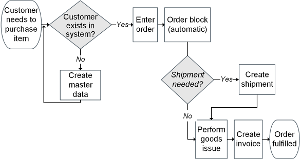

Overview
14 quality tools total: 7 basic tools (B7) and 7 new management/planning tools (N7). Select tools by category: nonquantitative, combination, or quantitative.
- Seven basic tools (B7): process map, control chart, Pareto chart, cause-and-effect diagram, histogram, check sheet, scatter chart
The ASCM Supply Chain Dictionary defines a process map (or flowchart) as follows:

image171.png
- Process map: use brainstorming/Post-it method to list, group, and sequence all tasks; include time, resources, and responsible parties
The control chart, according to the ASCM Supply Chain Dictionary, provides “a graphic comparison of process performance data with predetermined computed control limits.”
Control charts are useful graphical tools to differentiate special cause variation and common cause variation in a given process. This activity is called statistical process control (SPC) (or statistical quality control when acceptance sampling is also included) and is defined in the ASCM Supply Chain Dictionary as “the application of statistical techniques to monitor and adjust an operation.”

image172.png
- Control chart: center line = mean; UCL/LCL = ±3 sigma; data within limits = process in control
- Specification limits (USL/LSL): set by customer; differ from statistical control limits
Pareto analysis, which shows the frequency of items in a data set, is based on Pareto’s law, defined in the ASCM Supply Chain Dictionary as “a concept developed by Vilfredo Pareto, an Italian economist, that states that a small percentage of a group accounts for the largest fraction of its impact or value.” Closely associated with Pareto’s law is 80-20, a principle that “suggests that most effects come from relatively few causes; that is, 80 percent of the effects (or sales or costs) come from 20 percent of the possible causes (or items)” (ASCM Supply Chain Dictionary).
The ASCM Supply Chain Dictionary defines a Pareto chart (or diagram) as “a bar graph that displays the results of a Pareto analysis...[it] show[s] a distinct variation from the few compared to the many.” By identifying the significant few and separating them from the trivial many, a team will be better prepared to focus its resources efficiently and effectively to achieve the biggest gains.

image173.png
- Pareto chart: bars ranked highest to lowest; vital few (≈80% of effect) = focus of improvement
- Cause-and-effect (fishbone / Ishikawa): links effect to possible causes and subcauses; common categories: environment, people, materials, measurement, methods, equipment
- Root cause: use Five Whys to drill past symptoms; fix root cause, not surface symptoms

image174.png
- Histogram: bar graph of frequency distribution; shows variation range; look for skew, twin peaks, or out-of-spec variation
- Pareto vs. histogram: Pareto shows discrete categories; histogram shows continuous data range

image175.png
- Check sheet: simple tally tool for recording defect frequency; starting point for CI projects

image176.png
- Scatter chart: x = independent variable, y = dependent; direction + closeness of points shows correlation strength; used for associative forecasting

image177.png
- Seven new tools (N7): affinity diagram, tree diagram, matrix diagram, PDPC, relationship diagram, matrix data analysis chart, activity network diagram

image178.png
- Affinity diagram: organizes brainstormed ideas into themes; reveals magnitude of issues anonymously

image179.png
- Tree diagram: breaks goal into increasingly detailed tasks; used with affinity and relationship diagrams
- Matrix diagram: shows relationship strength between two or more groups; most common = L-shaped matrix
- PDPC (Process Decision Program Chart): maps what could go wrong; identifies preventive measures and fallback options
The goal is to identify the following:

image180.png

image181.png
- Relationship diagram: cause-and-effect arrows between ideas; identifies major cause (most arrows out) and most interrelated cause (most arrows in + out)
- Matrix data analysis chart: plots product lines against two variables; useful for differentiating similar products

image182.png
- Activity network diagram (arrow diagram / critical path): shows task order and dependencies; identifies critical path for project management

image183.png
- Tool categories: nonquantitative (maps, diagrams), quantitative (scatter, Pareto, histogram, control chart), combination (matrix with measured data)
The ASCM Supply Chain Dictionary defines six sigma as follows: A methodology that furnishes tools for the improvement of business processes. The intent is to decrease process variation and improve product quality.
- Six sigma goal: ≤3.4 defects per million opportunities; "defect" = anything not meeting customer expectations
- Certification levels: green belt, black belt (full-time), master black belt (primarily teaches)
- DMAIC: Define → Measure → Analyze → Improve → Control
- DMADV: for new process design (Define, Measure, Analyze, Design, Verify)
TERM / CONCEPT
ASCM definition: What is six sigma?
ANSWER
A methodology that furnishes tools for the improvement of business processes. The intent is to decrease process variation and improve product quality. Six sigma aims to achieve near-perfect products and services. The specific objective in a six-sigma organization is to get as close as possible to “zero defects,” with an outer limit of 3.4 defects p
Click card to flip · Use arrows or shuffle to practise
Question 1
Control charts monitor:
A.Budget vs. actual cost
B.Process variation over time, distinguishing common-cause from special-cause variation
C.Defect categories by frequency
D.Cause-and-effect relationships
Question 2
A Pareto chart identifies:
A.All defects with equal weight
B.The vital few causes responsible for most problems by ranking defect categories by frequency
C.Process variation over time
D.Input-output relationships
Question 3
A fishbone (Ishikawa) diagram identifies:
A.Financial variances
B.Potential root causes of a problem organized by categories such as Man, Machine, Method, and Material
C.Statistical process capability
D.Inventory levels
Question 4
Cpk measures:
A.Production output versus capacity
B.How well a process fits specification limits accounting for process centering
C.Average defect rate
D.Time between process failures